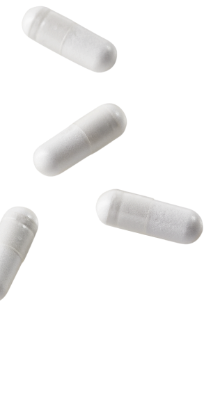
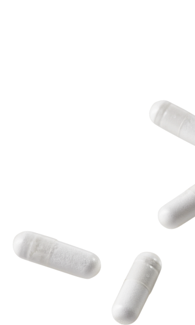

СОВРЕМЕННЫЕ ТРЕНДЫ
ГАСТРОПРОТЕКЦИИ
«
Уважаемые коллеги,
Протекция, говорит нам Википедия, — это протежирование, покровительство, влиятельная поддержка. Protege — защищенный, оберегаемый, а сyto- клетка (- от греч. kinos). Таким образом, мы с вами обсудим защиту клеток человеческого организма. Мы достаточно надежно защищены легко ранимым панцирем кожи и слизистых оболочек, но и они нуждаются в защите.
В новом проекте «Современные тренды гастропротекции» вашему вниманию будут предложены статьи, подкасты, инфографики, посвященные именно последнему аспекту — защите и восстановлению функций слизистых оболочек пищеварительного тракта. Это непростая задача, но начало решения ее относится прежде всего к заботе о себе, любимом, — диететика, нутрицевтика, исключение бытовых и социальных интоксикаций, и конечно, самонаблюдение, чтобы не пропустить ранних стадий развития заболевания, а ежели таковое и развилось (а у кого этого нет?), тогда противодействие его прогрессированию.
Наша наука предлагает целый спектр гастроцитопротекторов, а наша с вами задача — выбрать и создать наиболее эффективную и безопасную комбинацию.
Удачи всем вам!
Протекция, говорит нам Википедия, — это протежирование, покровительство, влиятельная поддержка. Protege — защищенный, оберегаемый, а сyto- клетка (- от греч. kinos). Таким образом, мы с вами обсудим защиту клеток человеческого организма. Мы достаточно надежно защищены легко ранимым панцирем кожи и слизистых оболочек, но и они нуждаются в защите.
В новом проекте «Современные тренды гастропротекции» вашему вниманию будут предложены статьи, подкасты, инфографики, посвященные именно последнему аспекту — защите и восстановлению функций слизистых оболочек пищеварительного тракта. Это непростая задача, но начало решения ее относится прежде всего к заботе о себе, любимом, — диететика, нутрицевтика, исключение бытовых и социальных интоксикаций, и конечно, самонаблюдение, чтобы не пропустить ранних стадий развития заболевания, а ежели таковое и развилось (а у кого этого нет?), тогда противодействие его прогрессированию.
Наша наука предлагает целый спектр гастроцитопротекторов, а наша с вами задача — выбрать и создать наиболее эффективную и безопасную комбинацию.
Удачи всем вам!
»

Лазебник Леонид Борисович, доктор медицинских наук,
профессор кафедры поликлинической
терапии МГМСУ им. А. И. Евдокимова. Президент Научного общества гастроэнтерологов России (НОГР).
Что такое гастропротекция?
Гастропротекция — это уменьшение или предотвращение
повреждения слизистой оболочки желудка, двенадцатиперстной кишки и пищевода
у людей с высоким риском развития гастродуоденальных поражений.

Что такое
гастропротекция?
Гастропротекторы способны защитить стенки желудка и ДПК от агрессивных
воздействий, которые могут приводить к изъязвлению слизистых оболочек1 (CO)

3 ключевых механизма физиологической
и фармакологической гастропротекции,
направленных на защиту СО желудка и ДПК:
Уменьшение повреждающего действия соляной кислоты (НСl) на СО желудка, ДПК и пищевода у пациентов с
высоким риском развития кислотозависимых заболеваний1
Восстановление нарушенных механизмов физиологической самозащиты и регенерации гастродуоденальной
слизистойили их стимуляция1
«Физическая» защита СО верхних отделов ЖКТ от повреждающего действия экзогенных и/или эндогенных
факторов физической
и химической агрессии1
и химической агрессии1
Подробнее


ВИДЕОПОДКАСТЫ
В ходе дискуссий специалисты рассматривают истории болезней
пациентов со стресс-индуцированными эрозивно-язвенными поражениями органов ЖКТ, YYGDG- гастропатиями,
кислото-зависимыми заболевания ЖКТ.
Модератор и спикер-эксперт: Антон Вячеславович Наумов
д.м.н., профессор кафедры болезней старения факультета ДПО ФГАОУ ВО РНИМУ им. Н.И. Пирогова.
д.м.н., профессор кафедры болезней старения факультета ДПО ФГАОУ ВО РНИМУ им. Н.И. Пирогова.

Тема:
Гастропротекторы - современный инструмент для лечения
патологии органов ЖКТ. Взгляд клинического фармаколога
Спикер:
Козлов Иван Генрихович

Тема:
Гастропротекторы - современный инструмент для лечения
патологии органов ЖКТ. Взгляд клинического фармаколога
Спикер:
Хомерики Наталья Михайловна

Тема:
Гастропротекторы - современный инструмент для лечения
патологии органов ЖКТ. Взгляд клинического фармаколога
Спикер:
Рачин Андрей Петрович

Тема:
Гастропротекторы - современный инструмент для лечения
патологии органов ЖКТ. Взгляд клинического фармаколога
Спикер:
Остапенко Валентина Сергеевна

ПОЛЕЗНЫЕ СТАТЬИ
НОВЫЕ КЛИНИЧЕСКИЕ РЕКОМЕДАЦИИ
Современные тренды гастропротекции (д.м.н., профессор Дроздов В.Н., к.м.н. Астаповский А.А.)
Дроздов Владимир Николаевич
д. м. н., профессор кафедры клинической фармакологии и пропедевтики
внутренних болезней ИКМ им. Н. В. Склифосовского Первый Московский государственный
медицинский университет имени И. М. Сеченова (Сеченовский Университет) (Россия, Москва)
Астаповский Александр Алексеевич
к. м. н., ассистент кафедры клинической фармакологии и пропедевтики внутренних болезней ИКМ им. Н.
В. Склифосовского Первый Московский государственный медицинский университет имени
И. М. Сеченова (Сеченовский Университет) (Россия, Москва)
Депрескайбинг против полипрагмазии у пациентов с заболеваниями ЖКТ: возможности гастропротекторов (к.м.н. Шульпекова Ю.О.)
Современные подходы к лечению заболеваний ЖКТ: возможности применения гастпротектора (д.м.н, профессор Хлынов И.Б.)